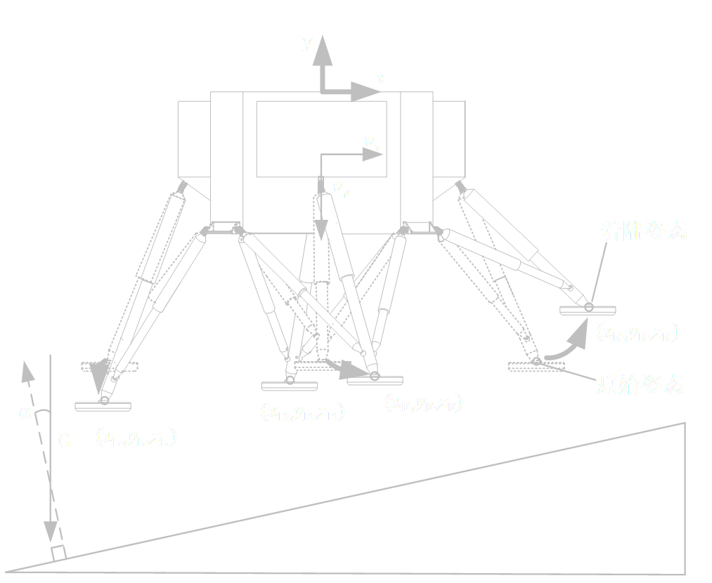
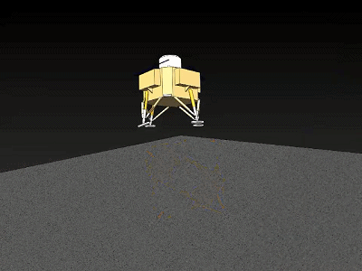
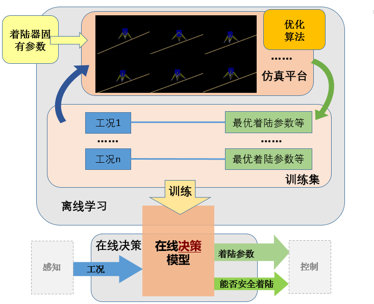
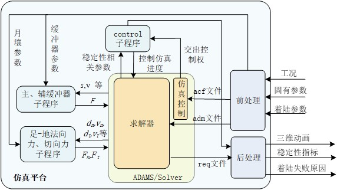
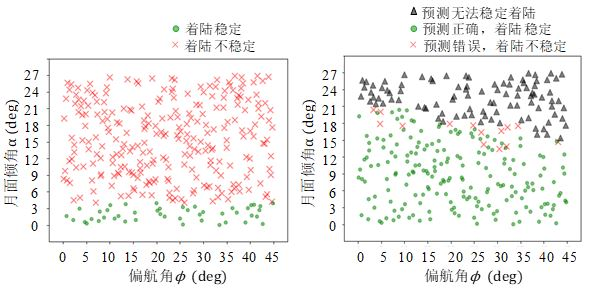

index
contact
project ∨
2019年
(硕士课题)
主动软着陆决策方法研究


什么是主动软着陆
基于着陆缓冲装置的主动软着陆是提升着陆器复杂地形着陆能力的一种方式。 基于缓冲装置的主动软着陆可定义为：根据着陆工况，着陆器自适应调整缓冲机构姿态或缓冲器阻尼，使得着陆器着陆过程姿态稳定。 目前针对主动软着陆的研究均针对在着陆缓冲过程中的主动控制，即在足垫触地后的缓冲过程中根据着陆器姿态参数对缓冲器阻尼或着陆腿姿态进行控制，使着陆器姿态保持稳定

主要研究内容
(1)着陆过程动力学模型及离线仿真平台搭建 分析不同着陆腿构型优缺点，确定着陆腿构型，对着陆腿进行逆运动学分析。建立足垫-月壤作用力及缓冲器缓冲力的数学模型,并用Adams子程序对模型进行了编程实现。开发基于Adams/Solver的仿真平台，前处理部分实现了对adm语言仿真模型的自动建模；后处理部分可利用仿真过程中的关键参数自动计算着陆稳定性指标，并基于PyQt及PyOpengl开发了三维GUI界面。 (2)基于铝蜂窝缓冲器的主动软着陆研究 。 (3)基于磁流变缓冲器的主动软着陆研究

仿真平台搭建
本文的最终目的为建立主动软着陆在线决策模型，在研究过程中需针对不同 工况进行大量仿真优化。由于着陆器结构复杂，待优化参数多，待优化工况多，目 前广泛应用的ADAMS/Insight 模块难以满足本课题的需求。故本文将根据着陆器 特点，针对性的设计优化算法及程序。由于优化过程需进行大量迭代仿真，故搭建 了主动软着陆仿真平台，设计专门的前处理及后处理程序实现仿真的批处理、自动 建模等功能。动力学计算内核仍使用ADAMS/Solver 求解器（如图2-10）。

决策模型
采用拉丁超立方在(0° ≤ 𝜙 ≤ 45°, 0° ≤ α ≤ 27°)内选取300 组测试工况作为测 试集，测试结果如图4-13。可见以决策模型计算的最优着陆参数着陆能使能使着 陆可行域显著增加，且决策模型决策的正确率为91%。决策模型𝐿𝑆的预测精度𝑅2 = 0.871，RMSE=19.4；𝐻𝑚𝑖𝑛的𝑅2 = 0.97，RMSE=19.0，可见本节建立的决策模型的 预测精度也需进一步提高。
未完待续……